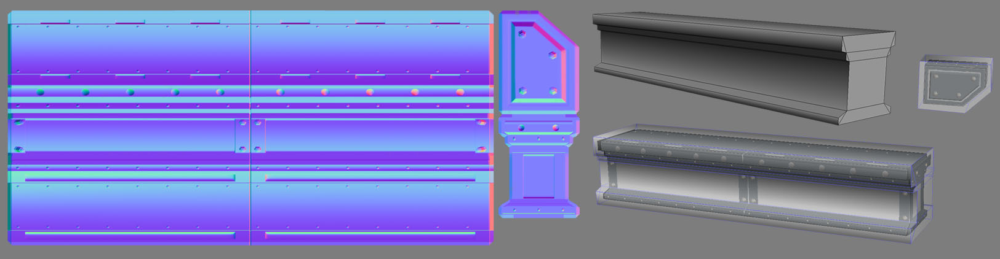
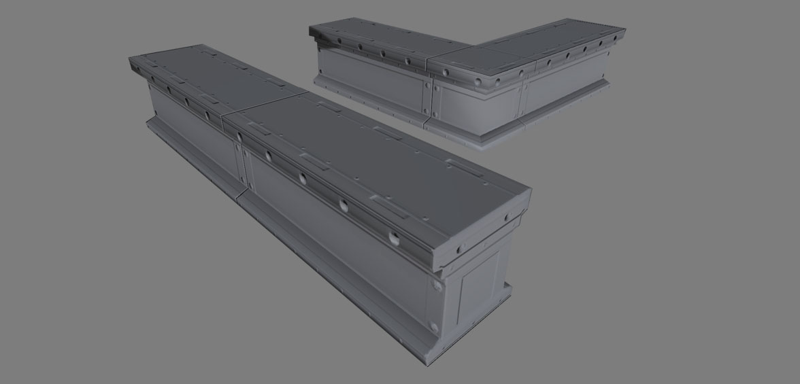
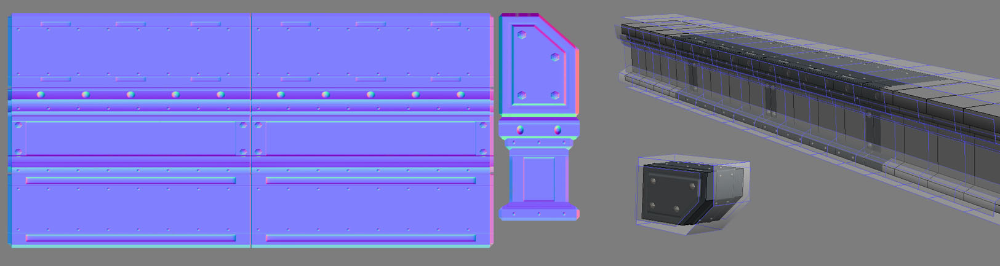

UDN
Search public documentation:
NormalMapProcessingCH
English Translation
日本語訳
한국어
Interested in the Unreal Engine?
Visit the Unreal Technology site.
Looking for jobs and company info?
Check out the Epic games site.
Questions about support via UDN?
Contact the UDN Staff
日本語訳
한국어
Interested in the Unreal Engine?
Visit the Unreal Technology site.
Looking for jobs and company info?
Check out the Epic games site.
Questions about support via UDN?
Contact the UDN Staff
法线贴图的处理过程
文档变更记录: Josh Marlow撰写； Paul Oliver 维护。
怎样处理法线贴图
倒角平滑组
- 优势 - 很多法线贴图；在低模时有少量不尖锐的边缘
- 劣势 - 顶点数量，缺乏重用性。
单个平滑组
- 优点 - 性能要求低，棱角够分明
- 缺点 - 不能用于其他设计
多个平滑组
- 优点 - 非常简洁并可以重复使用法线贴图
- 缺点 - 需要很多计算
处理示例
 开始我想试着使用一个平滑组，希望能在法线贴图里显示出更多的棱角来弥补平淡无聊的设计缺陷。我得出了如下结果
开始我想试着使用一个平滑组，希望能在法线贴图里显示出更多的棱角来弥补平淡无聊的设计缺陷。我得出了如下结果

即使在法线贴图查看模式下也能看出问题；您可以看到侧面的螺栓，中间位置投射出平整效果，但是在中间的螺栓向边缘伸展，从某种角度上可以看到。显而易见，法线在整个物件上都是弯曲的，所以它不能真实地呈现出大梁的外形。 在游戏模式中您能看到这些法线从某种角度上来看贴得太紧，当我试图通过Symmetry(对称)修改器用物件来搭建一个转角钢梁变体，搭建出来的效果在镜像点里有明显的缝隙，它同处理方式相背，让缝隙看起来很假。
下面我尝试使用多个平滑组来控制处理过程让它变得清晰。
在游戏模式中您能看到这些法线从某种角度上来看贴得太紧，当我试图通过Symmetry(对称)修改器用物件来搭建一个转角钢梁变体，搭建出来的效果在镜像点里有明显的缝隙，它同处理方式相背，让缝隙看起来很假。
下面我尝试使用多个平滑组来控制处理过程让它变得清晰。
 这种方法基本有效，但是侧面部分在螺栓上垂直方向仍然略有弯曲，并且靠近螺栓的端盖边缘上的螺栓在水平方向上仍然略有拉伸。这个方法其实可以用，但是它是一个3dMAX的包裹框的缺陷，它处理平滑组内部或方形端盖的破损的功能非常弱,因为包裹框投射不平整，它会有所弯曲。
这种方法基本有效，但是侧面部分在螺栓上垂直方向仍然略有弯曲，并且靠近螺栓的端盖边缘上的螺栓在水平方向上仍然略有拉伸。这个方法其实可以用，但是它是一个3dMAX的包裹框的缺陷，它处理平滑组内部或方形端盖的破损的功能非常弱,因为包裹框投射不平整，它会有所弯曲。

显然，在游戏中端盖的处理方法不正确，因为包裹框是弯曲的，它的设计并不是平整的，所以它遗漏了其中的一些重要数据，从而导致了端盖上的斜面没有同侧面的斜面严丝合缝。您也可以从某些角度上看到我在一些转角大梁变体所造成的细微缝隙。 我们已经快要达到目的了，此时我们仅需要做一些精细调整，我们可以使用Detached(分离的)平滑组技巧来修复最后这两个问题。
所以使用了Detached Smoothing group(分离平滑组)的方法,您就可以看到包裹框是如何正确辨识平滑组的，在顶端的平板直线向上投射，侧面直线向外投射。我也通过延展低模网格物体跨越高模的末端来解决螺栓边缘扭曲的问题。这个方法是有效的，因为如果我多次平铺展开该模型设计，平滑组是相对于模型呈现的效果进行处理，而不是相对于一部分。我们可以任意拉动包裹框，忽略平滑组的边界，以便它可以模拟一平铺的BSP贴图的工作原理 我们扩展到该侧面的低模部分没有高模信息要捕捉，我就将这些UV移动到具有需要处理的信息的侧面区域中。这是一项开始既复杂又无用的工作，但是我们要做的是对物件在游戏中使用的方式进行处理，而不是简单地相对于UV和一个高模配置进行处理。 这通常也是选择何种方法进行处理的最要因素，它会更关心我们是怎么知道在游戏中使用物件的。现在我们在这个实例中试着把一堆这样的钢条挨个堆积起来并排成一个长条。 我们现在能在游戏中看到这个网格物体看上去非常完美，所有的螺栓都很平整,没有任何扭曲，支持无缝转角变体，这也是因为法线和相关的平滑组都很平整的原因。
这就让我们的贴图支持游戏中的多组件的可变性，以下您可以看到我是怎样去处理这些额外部分的，钢条是在战争机器3中组成桥梁的部分组件。
我们现在能在游戏中看到这个网格物体看上去非常完美，所有的螺栓都很平整,没有任何扭曲，支持无缝转角变体，这也是因为法线和相关的平滑组都很平整的原因。
这就让我们的贴图支持游戏中的多组件的可变性，以下您可以看到我是怎样去处理这些额外部分的，钢条是在战争机器3中组成桥梁的部分组件。
 因为法线贴图很平整，所以它们可以支持计划外的设计，这样我们就很容易地搭建出更多的机械组件。
因为法线贴图很平整，所以它们可以支持计划外的设计，这样我们就很容易地搭建出更多的机械组件。